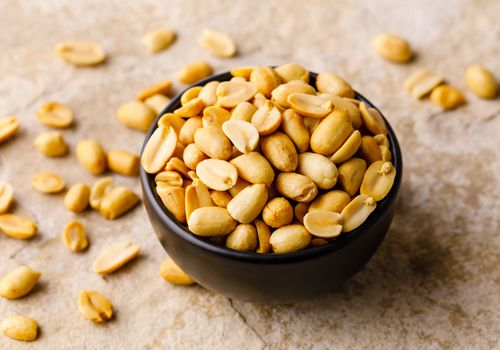

Nut Types
- Peanuts
- Cashews
- Pistachios
- Hazelnuts
A nut is a fruit consisting of a hard or tough nutshell protecting a kernel which is usually edible. In general usage and in a culinary sense, a wide variety of dry seeds are called nuts, but in a botanical context "nut" implies that the shell does not open to release the seed (indehiscent).
Most seeds come from fruits that naturally free themselves from the shell, but this is not the case in nuts such as hazelnuts, chestnuts, and acorns, which have hard shell walls and originate from a compound ovary. The general and original usage of the term is less restrictive, and many nuts (in the culinary sense), such as almonds, pecans, pistachios, walnuts, and Brazil nuts,[1] are not nuts in a botanical sense. Common usage of the term often refers to any hard-walled, edible kernel as a nut.[2] Nuts are an energy-dense and nutrient-rich food source.[3]
A seed is the mature fertilised ovule of a plant; it consists of three parts, the embryo which will develop into a new plant, the endosperm which contains nutrients, and a protective seed coat. Botanically, a nut is a seed which has a large proportion of endosperm and a tough seed coat which becomes increasingly hard as the nut matures.[4] One or a few nuts may be contained in an involucre, a cup-shaped structure formed from the flower bracts. The involucre may be scaly, spiny, leafy or tubular, depending on the species of nut.
This is what a nut looks like.
Top 10 Men
- Steve Carell
- David Harbour
- Josh
- Henry Cavill
- Bee Chuter
- Lemon Cubes
This is what a man looks like.

Top 10 Women
- Liv
- Liv 2
- Josh
- Pepper
- Bee Chuter
- Lemon Cubes
This is what a lady looks like.